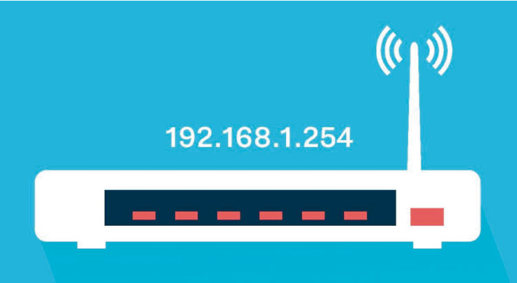

IP
La dirección IP es un conjunto de números que identifica, de manera lógica y jerárquica, a una Interfaz en red (elemento de comunicación/conexión) de un dispositivo (computadora, laptop , teléfono inteligente) que utilice el protocolo o (Internet Protocol), que corresponde al nivel de red del modelo TCP/IP.1 La dirección IP no debe confundirse con la dirección MAC, que es un identificador de 48 bits expresado en código hexadecimal, para identificar de forma única la tarjeta de red y no depende del protocolo de conexión utilizado en la red. La dirección IP puede cambiar muy a menudo debido a cambios en la red, o porque el dispositivo encargado dentro de la red de asignar las direcciones IP, decida asignar otra IP (por ejemplo, con el protocolo DHCP). A esta forma de asignación de dirección IP se le denomina también dirección IP dinámica (normalmente abreviado como IP dinámica).1Los sitios de Internet que por su naturaleza necesitan estar permanentemente conectados, generalmente tienen la necesidad de una dirección IP fija (comúnmente, IP fija o IP estática). Esta no cambia con el tiempo. Los servidores de correo, DNS, FTP públicos y servidores de páginas web necesariamente deben contar con una dirección IP fija o estática, ya que de esta forma se permite su localización en la red.1 Los dispositivos se conectan entre sí mediante sus respectivas direcciones IP. Sin embargo, para las personas es más fácil recordar un nombre de dominio que los números de la dirección IP. Los servidores de nombres de dominio DNS, "traducen" el nombre de dominio en una dirección IP. Si la dirección IP dinámica cambia, es suficiente actualizar la información en el servidor DNS. El resto de las personas seguirán accediendo al dispositivo por el nombre de dominio.
Elkin Alexis Castaño Visita mi perfil
Elaborado para Validacion de Diseño de Interfases y Desarrollo de Sistemas Informaticos y Multimediales ">